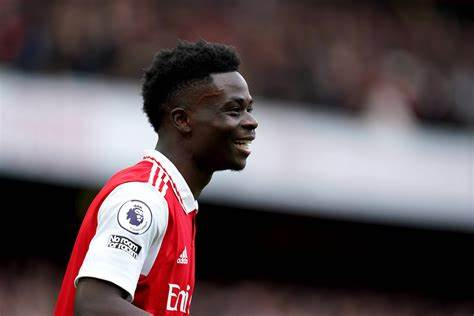

Bukayo Saka returned with a bang against Fulham by scoring just six-and-a-half minutes into his comeback from injury, taking his tally to 68 in our colours..

Saka vs Fulham
Last season saw the Hale End graduate become the youngest player to hit 50 for the club since Frank Stapleton in 1978, and he has continued to rattle in the goals since - but how many of his victims can you recall?
Bukayo has netted against 35 different clubs since making his debut for us in November 2018 - we've given you 10 minutes to think of as many as you can..
Ethan Nwaneri
It’s clear that Arsenal have a centre-forward issue at the club, with both Kai Havertz and Gabriel Jesus out injured for the season.
Plenty of different solutions have been tried so far, with Arteta leaning more towards using Mikel Merino as his first choice there.
While the Spaniard has the physicality to compete and can arrive in the box well, some of his other movements aren’t that of a natural striker.
That’s where Nwaneri could come in, with the youngster capable of playing as a striker.
Arteta has previously hinted that he could play Nwaneri there in the future, while it’s a role he has featured in for the youth team.